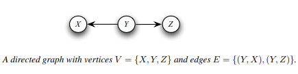
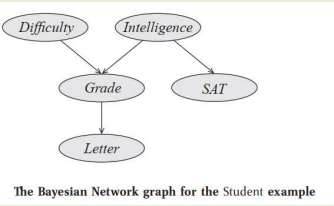

A Directed Acyclic Graph is used to represent a Bayesian Network and like any other statistical graph, a DAG contains a set of nodes and links, where the links denote the relationship between the nodes.
A graphical model is a probabilistic model for which the conditional independence structure is encoded in a graph. In a graphical model, vertices (or nodes) represent random variables, and the edges encode conditional independence relations among the associated vertices.
The graph characterizes the way in which the joint distribution factors into the product of many small components, each of which contains only a subset of variables.

Let X, Y and Z be random variables. X and Y are conditionally independent given Z, written X ㅛ Y | Z, if
p(x, y|z) = p(x|z) * p(y|z)
for all x, y and z.
It is an instance of a much more general model commonly called the naive Bayes model.
known as the Idiot Bayes model. The naive Bayes model assumes that instances fall into one of a number of mutually exclusive and exhaustive classes. Thus, we have a class variable C that takes on values in some set {c1, ..., ck}. In the reference of the [student problem], the class variable is the student’s intelligence I, and there are two classes of instances — students with high intelligence and students with low intelligence.
The model also includes some number of features X1,..Xn whose values are typically observed.
The naive Bayes assumption is that the features are conditionally independent given the instance’s class. In other words, within each class of instances, the different properties can be determined independently. This model can be represented using the Bayesian Network.
The naive Bayes model, despite the strong assumptions that it makes, is often used in practice,
because of its simplicity and the small number classification of parameters required. The model is generally used for classification — deciding, based on the values of the evidence variables for a given instance, the class to which the instance is most likely to belong.
Built on the same intuitions as the naive Bayes model by exploiting conditional independence properties of the distribution in order to allow a compact and natural representation.
Not restricted to representing distributions satisfying the strong independence assumptions implicit in the naive Bayes model allows us the flexibility to tailor our representation of the distribution to the independence properties that appear reasonable in the current setting.
Representation is a directed acyclic graph (DAG) G, whose nodes are the random variables in our domain and whose edges correspond to direct influence of one node on another.
Any graph G can be viewed in two very different ways:
1. As a data structure that provides the skeleton for representing a joint distribution compactly in a factorized way;
2. As a compact representation for a set of conditional independence assumptions about a distribution.
Student Example
Consider a student,
- The student’s grade, in this case, depends not only on his intelligence but also on the difficulty of the course, represented by a random variable D whose domain is Val(D) = {easy, hard}
- Students ask his professor for a recommendation letter. • The professor is absentminded and never remembers the names of her students. She can only look at his grade, and she writes her letter for him based on that information alone. • The quality of her letter is a random variable L, whose domain is Val(L) = {strong; weak}
- The actual quality of the letter depends stochastically on the grade.
- We therefore have five random variables in this domain:
1. The student’s intelligence (I),
2. The course difficulty (D),
3. The grade (G),
4. The student’s SAT score (S)
5. The quality of the recommendation letter (L)
- All of the variables except G are binary-valued, and G is ternary-valued.

A Bayesian network is represented using a directed graph whose nodes represent the random
variables and whose edges represent direct influence of one variable on another.
We can view the graph as encoding a generative sampling process executed by nature, where the
value for each variable is selected by nature using a distribution that depends only on its
parents.
In other words, each variable is a stochastic function of its parents.